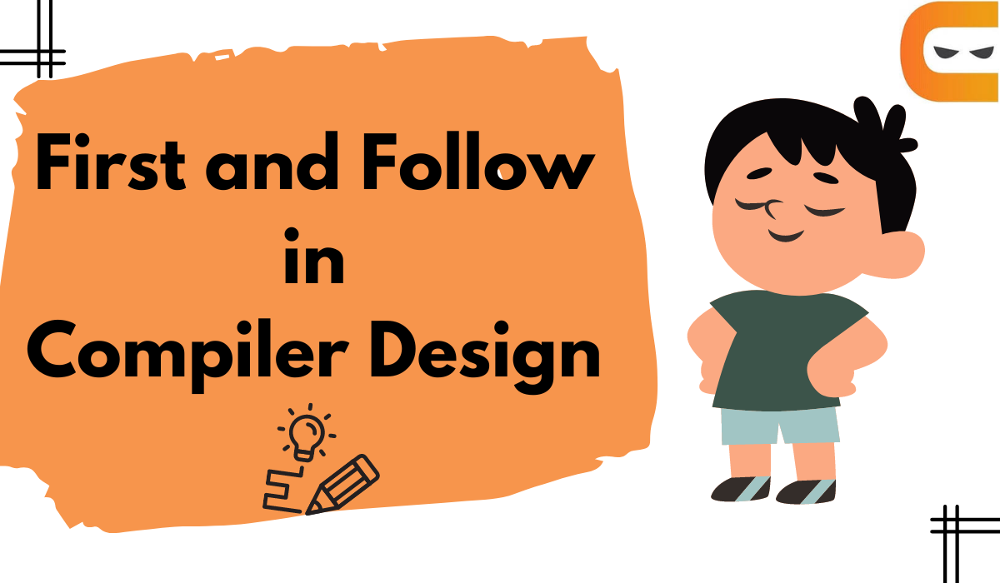

In this article, we will learn about First and follow in compiler design, rules to find the first and follow in compiler design, and some related examples to find first and follow.
FIRST and FOLLOW in compiler design are two grammatical functions that help you enter table entries. We will discuss the First and Follow in detail below. If the compiler knew ahead of time what the "initial character and follow up of the string produced when a production rule is applied," it might carefully choose which production rule to apply by comparing it to the current character or token in the input string it sees.
FIRST () is a function that specifies the set of terminals that start a string derived from a production rule. It is the first terminal that appears on the right-hand side of the production. For example,
If the Input string is
T->*FT’/ε
Here we find out that T has two productions like T->*FT’ and T->ε, after viewing this we found the first of T in both the production statement which is * and ε.
Then the first of the string will be {*,ε}.
To find the first() of the grammar symbol, then we have to apply the following set of rules to the given grammar:-
Follow () is a set of terminal symbols that can be displayed just to the right of the non-terminal symbol in any sentence format. It is the first non-terminal appearing after the given terminal symbol on the right-hand side of production.
For example,
If the input string is
E->TE’, F->(E)/id
Here we found that on the right-hand side of the production statement where is the E occurs, we only found E in the production F->(E)/id through which we found the follow of E.
Then the output Follow of E = { ) }, as ‘)’ is the non-terminal in the input string on the right-hand side of the production.
To find the follow(A) of the grammar symbol, then we have to apply the following set of rules to the given grammar:-
Let us consider grammar to show how to find the first and follow in compiler design.
Here,
Terminals are id, *, +, ε, (, )
Non-terminals are E, E’, T, T’, F
Now let’s try to find the first of ‘E’. here on the right-hand side of the production E->TE’ is T which is a non-terminal but we have to find the terminals so to find terminals we move to the production T->FT’ in which the first element is again a non-terminal, so we move to the third production F->(ε)/id in which the first element is a terminal which will be the first of E.
So, First(E)={(, id}
Now let’s try to find the follow of ‘E’, to find this we find the production in which ‘E’ is on the right-hand side and we get production which is F->(E)/id, so the follow will be the next non-terminal followed by the terminals which are ‘)’ and in the follow ‘$’ is always added. So the follow(E)={$,)}
On repeating the above steps to find the first and follow in compiler design, we get
| Non-terminals | First() | Follow() |
|---|---|---|
| E | {(,id} | {$,)} |
| E' | {+,∈} | {$,)} |
| T | {*,∈} | {$,+,)} |
| T' | {(,id)} | {+,),$} |
| F | {(,id} | {+,),$,*} |
Generate First and Follow here!
It is used during the parser table construction, first and follow sets are created to find the correct position of any terminal in the derivation.
First() and Follow() are functions that help the parser to apply the needed rule at the correct position. It also provides selected information for recursive descent parsers.
first and follow are important because they help the parser determine which production rule to apply to the given input. First tells which terminal can start production whereas the follows tells the parser what terminal can follow a non-terminal.
First sets are generated by adding all terminals and non-terminals that can be derived from a production rule's left side. Then follows sets are generated after adding all terminals that can appear after the non-terminal in a right-hand side of a production rule.
Yes, epsilon can be in the first set if the non-terminal can derive the empty string.
Yes, the order of grammar rules affects the first set because the first terminal in the production is always chosen first.
In this article, we have extensively discussed the introduction to first and follow in compiler design. We have started with an introduction to First and Follow in compiler design, then a gave a brief description about first and follow with examples, then rules to find the first and follow and examples on it.